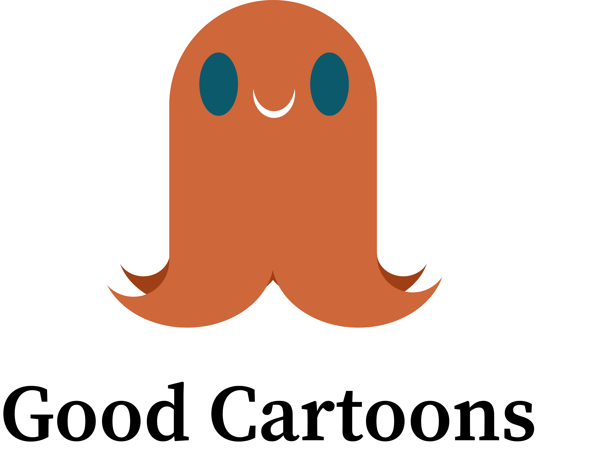

Good Cartoons
Logo per un'azienda che produce cartoni animati.

Softwer usati:
Creazione del logo
Per la creazione del logo ho optato per una soluzione più figurativa, creando una vera e propria mascotte,
rimanendo sempre in tema con l'azienda.
Il logo dunque comprende in primo piano la figura della mascotte, ovvero un cucciolo di polpo sorridente e il
nome dell'azienda "Good Cartoons" sotto la figura della mascotte.

Color palette logo:
#ce673a
#9e3f15
#0c596b
#ffffff
#000000
I sui colori vivaci vanno a richiamare ottimismo, allegria, divertimento e energia.
Font:
Il font utilizzato per questo logo è Source Serif Variable.
Mockup